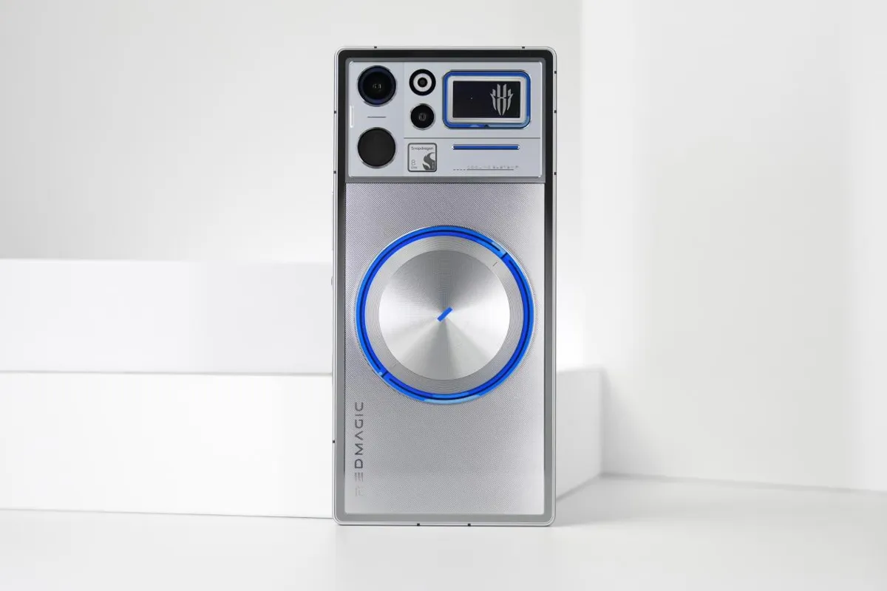

تقنية8 دقائق
هواتف الألعاب 2026: Red Magic 12 Pro+ ضد HONOR WIN 2 ضد iQOO 16 ضد OnePlus 16
أربعة هواتف تستهدف اللاعبين في خريف 2026: Red Magic 12 Pro+ بتبريد مائي ومروحة، وHONOR WIN 2 بمروحتين، وiQOO 16 بشاشة 2K بتردد 165Hz، وOnePlus 16 ببطارية 9,000mAh. كل الأرقام أدناه من اختبارات صينية منشورة في مقالاتنا.

جدول المقارنة الكامل
| المعيار | Red Magic 12 Pro+ | HONOR WIN 2 | iQOO 16 | OnePlus 16 |
|---|---|---|---|---|
| المعالج | Snapdragon 8 Elite Extreme Gen 6 + RedCore R5 | Snapdragon 8 Elite Gen 6 Extreme Edition | Snapdragon 8 Elite Extreme Gen 6 + Q4 | Snapdragon 8 Elite Extreme Gen 6 |
| الشاشة | 6.85 بوصة، 185Hz | 6.89 بوصة 2K، 185Hz | 6.85 بوصة 2K، 165Hz | 6.78 بوصة، حتى 185Hz في الألعاب |
| التبريد | تبريد مائي ومروحة 25,500 دورة/دقيقة | مروحتان (31,000 و20,000 دورة/دقيقة) | غرفة بخار 8,500 مم² | غير متوفر |
| البطارية | 8,400mAh | 10,100mAh | 8,400mAh | 9,000mAh |
| الشحن السلكي / اللاسلكي | 120W / 80W | 100W / 80W | 100W / 40W | 100W / 50W |
| AnTuTu V12 | 5,071,196 | غير متوفر | 4,713,915 | 4,890,664 |
| Honor of Kings | 145 إطارًا، 3.71 واط، 40.6 درجة | 144.21 إطارًا، 5.00 واط، 42.3 درجة | 144.29 إطارًا، 3.89 واط | 167.09 إطارًا (وضع 165)، 34.9 درجة |
| Genshin | 60.99 إطارًا، 4.21 واط، 43.8 درجة | 60.07 إطارًا، 5.96 واط، 40.8 درجة | 59.83 إطارًا، 3.81 واط | غير متوفر |
| Star Rail | 60.98 إطارًا، 6.88 واط | 59.93 إطارًا، 9.92 واط، 43.8 درجة خلفية | 59.14 إطارًا، 7.32 واط | غير متوفر |
| ألعاب 185 إطارًا | غير متوفر | Delta Force: 184.81، 6.61 واط | غير متوفر | Delta Force: 184.82، 43.1 درجة |
| بطارية: 6 ساعات مختلطة (AnTuTu) | بقي 41% | بقي 75% (ترتيب AnTuTu) | بقي 68% | بقي 69% |
| زمن الشحن الكامل | 68 دقيقة و40 ثانية (AnTuTu) | 80 دقيقة (雷科技) | غير متوفر | 54 دقيقة (AnTuTu) / 62 دقيقة (充电头网) |
| السعر الابتدائي | ¥6,999 | ¥5,499 | ¥5,999 | ¥5,999 |
الأسعار بالدولار والريال
| الهاتف والنسخة | السعر الرسمي في الصين | بالدولار | بالريال السعودي |
|---|---|---|---|
| Red Magic 12 Pro+ 12+256 | ¥6,999 | 1,046$ | 3,924 ريال |
| HONOR WIN 2 12+256 | ¥5,499 | 822$ | 3,083 ريال |
| HONOR WIN 2 16GB+1TB (سعر الإطلاق الأول) | ¥7,699 | 1,151$ | 4,316 ريال |
| iQOO 16 12+256 | ¥5,999 | 897$ | 3,363 ريال |
| OnePlus 16 12+256 | ¥5,999 | 897$ | 3,363 ريال |
سعر الصرف: 1 يوان = 0.149493 دولار = 0.560594 ريال سعودي (open.er-api.com، تحديث 22 أكتوبر 2026، 04:02 بتوقيت مسقط). الأسعار المحوّلة تقريبية ولا تشمل الشحن والجمارك.
من يشتري أي هاتف؟
- Red Magic 12 Pro+: لمن يريد أعلى نتيجة AnTuTu وإطارات شبه كاملة، مع تقبّل أضعف نتيجة بطارية في اختبار 6 ساعات (41%).
- HONOR WIN 2: لمن يريد أكبر بطارية بين الأربعة وأفضل نتيجة 6 ساعات (75%)، بأقل سعر، مع استهلاك عالٍ في Star Rail (9.92 واط) وشحن كامل بطيء (80 دقيقة).
- iQOO 16: لمن يريد شاشة 2K بتردد 165Hz وكفاءة جيدة في Genshin (3.81 واط).
- OnePlus 16: لمن يريد أبرد حرارة في Honor of Kings (34.9 درجة) وأسرع شحن كامل.
تقييمات المصادر الصينية
- ريد ماجيك 12 برو بلس: أداء ألعاب ثابت وتبريد مائي مضيء، والنظام نقطة الضعف في أسابيعه الأولى: AnTuTu وZOL.
- هونر WIN Turbo 2 وWIN RT 2 وWIN 2: ثلاثة هواتف ألعاب بشاشة 185Hz وبطاريات حتى 12,070mAh: AnTuTu و雷科技 لهاتف WIN 2.
- iQOO 16 بعد ثلاثة أسابيع في الصين: شاشة 2K بتردد 165 هرتز وبطارية 8400 مللي أمبير… ماذا تقول الاختبارات والملاك؟: AnTuTu.
- ون بلس 16 بعد أسبوع من طرحه في الصين: ماذا يقول الملاك عن بطارية 9000 مللي أمبير والشاشة 185 هرتز؟: AnTuTu و充电头网.
آخر تحديث للتقييمات: 22 أكتوبر 2026
#midroid5G #ألعاب #تقنية